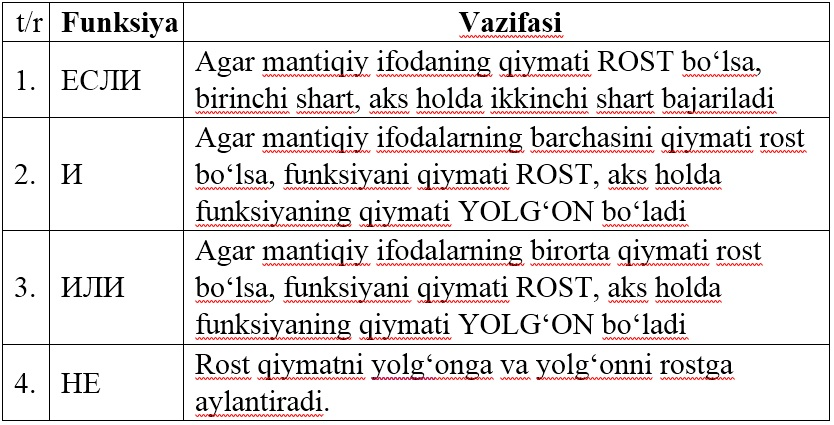
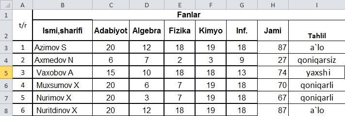
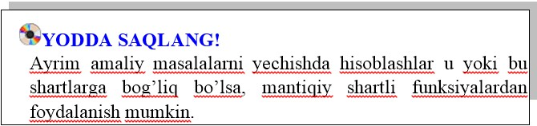

10-DARS. MANTIQIY FUNKSIYALAR
Ayrim amaliy masalalarni yechishda hisoblashlar u yoki bu shartlarga bog‘liq bo‘lishi mumkin. Bunday holatda mantiqiy shartli funksiyalardan foydalanish mumkin.
Mantiqiy funksiyalar

1-mashq. Sinfning beshta fandan 20 ballik tizimda baholanganda ularning o‘zlashtirish ko‘rsatkichini tahlil qiluvchi jadval yaratish.
Bajarish: Ushbu topshiriqni bajarish algoritmi quyidagicha:
• B ustunga sinf o‘quvchilarining familiyasi va ismi kiritiladi;
• C ustunga adabiyot fanidan olgan ballari kiritiladi;
• D ustunga algebra fanidan olgan ballari kiritiladi;
• E ustunga fizika fanidan olgan ballari kiritiladi;
• F ustunga kimyo fanidan olgan ballari kiritiladi;
• G ustunga informatika fanidan olgan ballari kiritiladi;
• H ustunga olgan ballarning yig‘indisi hisoblanadi;
• I3 va I17 kataklarga quyidagi formula kiritiladi;
=ЕСЛИ(C17<55;"qoniqarsiz";ЕСЛИ(C17<71;"qoniqarli";ЕСЛИ(C17<86;"yaxshi";"a’lo")))



1. И funksiyasining vazifasini tushuntirib bering.
2. ИЛИ funksiyasining vazifasini tushuntirib bering.
Savdo marketida sotuvchilarga quyidagicha shart qo‘yilgan:
• sotuvchi eng kam ish haqining 5 barobari miqdorida savdo qilsa 5% ustamaga ega bo‘ladi;
• sotuvchi eng kam ish haqining 10 barobari miqdorida savdo qilsa 7,5% ustamaga ega bo‘ladi;
• sotuvchi eng kam ish haqining 20 barobari miqdorida qilsa 10% ustamaga ega bo‘ladi;
• sotuvchi eng kam ish haqining 20 barobaridan ortiq savdo qilsa 12% ustama ega bo‘ladi.
Ushbu topshiriqni mantiqiy hisoblash jadvalini hosil qiling.

1. 10 ta fandan 10 ballik tizimda baholangandan ularning o‘zlashtirish ko‘rsatkichini tahlil qiluvchi jadval yarating.
2. ИЛИ funksiyasiga doir mustaqil ravishda masala tuzing va uni yeching